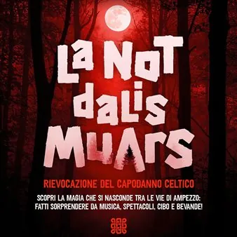

sab 31 ott · dalle 18:00
Halloween: La not dalis muars - Rievocazione del Capodanno Celtico
Rievocazione storica del capodanno celtico.
 Indicazioni
Indicazioni
- Costi e prenotazioni
- Costo non indicato · Prenotazione non indicata
- Programma
- Programma da verificare. Apri la fonte ufficiale per orari e possibili aggiornamenti.
- In caso di maltempo
- Nessuna indicazione specifica pubblicata.
- Note
- Acquisito automaticamente dalla fonte.
L’EVENTO
Descrizione completa
Al calare del sole, nei cortili e nelle contrade del centro storico, illuminati soltanto da fiaccole, si possono ammirare i giochi di luce prodotti dalle zucche intagliate esposte lungo tutto il percorso, dai giocolieri e mangiafuoco, avvolti dalla musica e dagli invitanti profumi delle pietanze preparate nelle corti, circondati da fantastiche figure in un'atmosfera surreale. Programma
Dalle ore 18:00.
Apertura chioschi nelle vie di Ampezzo con cibo e bevande tipiche della tradizione
Apertura stand nelle vie di Ampezzo e mercatino hobbisti con prodotti di artigianato
Inizio votazioni Concorso Zucche (stand b)
Cartomante (stand d), Truccabimbi (stand c) e lettura tarocchi (stand e)
Ore 18:00
Favola con percorso animato – giovins comedians: il gruppo teatrale propone ““lo stregone senza poteri” – stand f
Dalle ore 19.00.
Musica itinerante nelle vie del Paese.
Dalle ore 20.00
Spettacoli itineranti nelle vie del Paese.
Ore 19:30
Ore 20:30
Spettacolo musicale: Il violino di eleonora montagnana. Musica magia e atmosfere da brividi – stand 12
Ore 21:30
Spettacolo di fuoco “I don’t speak human” di Dyai nella piazza di Ampezzo: a parlare è il fuoco, espresso in diverse forme e velocità tramite catene, corde, bastoni E ovviamente momenti di sputafuoco e mangiafuoco! – stand 20
Spettacolo musicale: Il violino di eleonora montagnana. Musica magia e atmosfere da brividi – stand 4
Ore 22:30
Spettacolo di fuoco dei torototelis nella piazza di Ampezzo, con musica, coreografia, sputafuoco e strumenti infuocati! – stand 4
Spettacolo musicale: Il violino di eleonora montagnana. Musica magia e atmosfere da brividi – stand 20
Dalle ore 23:00
Si balla con Mitch DJ
drinks & Cocktails nella piazza di Ampezzo – stand 4
___________________________________________________________________________________________
CONCORSO ZUCCHE
Porta la tua zucca intagliata presso l'ufficio turistico, dalle 9.00 alle 12.00.
VOTAZIONI E PREMIAZIONE
Le votazini si svolgeranno durante l'Evento nello Stand B, dalle ore 18.00.
Il vincitore verrà contattato per ritirare il premio.
PARTECIPATE NUMEROSI!
IL PROGRAMMA
Programma e orari
Appuntamenti raccolti dalle fonti elencate. Dove manca un orario, non è ancora disponibile in questa scheda.
Programma pubblicato
- Ore 18:00
- Ore 19:30
- Ore 20:30
- Ore 21:30
- Ore 22:30
INFORMAZIONI UTILI
Prima di partire
- Controllare la fonte prima di partire.
ORGANIZZAZIONE